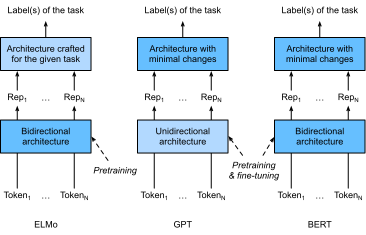
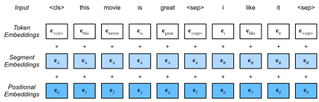

15.8. 来自 Transformer 的双向编码器表示（BERT）¶
我们已经介绍了几种用于自然语言理解的词嵌入模型。 预训练之后，输出可以被看作一个矩阵， 其中每一行是一个向量，表示预定义词表中的一个词。 事实上，这些词嵌入模型都是上下文无关的。 让我们先来说明这一性质。
15.8.1. 从上下文无关到上下文敏感¶
回想 15.4节 和 15.7节 中的实验。 例如，无论词的上下文如何（如果有的话），word2vec 和 GloVe 都为同一个词分配相同的预训练向量。 形式化地说，任意词元 \(x\) 的上下文无关表示 是一个仅以 \(x\) 作为输入的函数 \(f(x)\)。 鉴于自然语言中大量的多义现象和复杂的语义， 上下文无关表示具有明显的局限性。 例如，单词“crane”在 “a crane is flying”和“a crane driver came”这两种上下文中具有完全不同的含义； 因此，同一个词可能会根据上下文被分配不同的表示。
这推动了上下文敏感词表示的发展， 其中词的表示依赖于它们的上下文。 因此，词元 \(x\) 的上下文敏感表示是一个函数 \(f(x, c(x))\)， 它同时依赖于 \(x\) 及其上下文 \(c(x)\)。 流行的上下文敏感表示 包括 TagLM（语言模型增强的序列标注器）:cite:Peters.Ammar.Bhagavatula.ea.2017、 CoVe（上下文向量）:cite:McCann.Bradbury.Xiong.ea.2017 和 ELMo（来自语言模型的嵌入）:cite:Peters.Neumann.Iyyer.ea.2018。
例如，通过将整个序列作为输入， ELMo 是一个为输入序列中的每个词分配表示的函数。 具体来说，ELMo 将预训练双向 LSTM 中所有中间层的表示组合为输出表示。 然后，ELMo 表示将作为额外特征加入下游任务已有的监督模型中， 例如将 ELMo 表示与已有模型中词元的原始表示（如 GloVe）连结。 一方面， 在加入 ELMo 表示之后，预训练双向 LSTM 模型中的所有参数都被冻结。 另一方面， 已有的监督模型是针对给定任务专门定制的。 利用当时针对不同任务的不同最佳模型， 加入 ELMo 在六个自然语言处理任务上提高了最优水平： 情感分析、自然语言推断、 语义角色标注、指代消解、 命名实体识别和问答。
15.8.2. 从任务特定到任务无关¶
尽管 ELMo 显著改进了对多种自然语言处理任务的解决方案， 但每个解决方案仍然依赖于任务特定的架构。 然而，为每个自然语言处理任务专门设计一个架构实际上并非易事。 GPT（生成式预训练）模型代表了 为上下文敏感表示设计通用任务无关模型的一种努力 (Radford et al., 2018)。 GPT 建立在 Transformer 解码器之上， 预训练一个将用于表示文本序列的语言模型。 将 GPT 应用于下游任务时， 语言模型的输出将被送入一个添加的线性输出层， 以预测该任务的标签。 与冻结预训练模型参数的 ELMo 形成鲜明对比的是， 在对下游任务进行监督学习时，GPT 微调预训练 Transformer 解码器中的所有参数。 GPT 在自然语言推断、 问答、句子相似性和分类等十二个任务上进行了评估， 并在其中九个任务上以对模型架构最小的改动 提高了最优水平。
然而，由于语言模型的自回归性质， GPT 只能向前看（从左到右）。 在上下文“i went to the bank to deposit cash”和“i went to the bank to sit down”中， 由于“bank”对其左侧的上下文敏感， GPT 将为“bank”返回相同的表示， 尽管它具有不同的含义。
15.8.3. BERT：将两者的优势结合起来¶
正如我们所看到的， ELMo 双向编码上下文，但使用任务特定的架构； 而 GPT 任务无关，但从左到右编码上下文。 BERT（来自 Transformer 的双向编码器表示） 将两者的优势结合起来， 双向编码上下文，并且对广泛的自然语言处理任务 只需对架构做最小的改动 (Devlin et al., 2018)。 利用预训练的 Transformer 编码器， BERT 能够根据双向上下文表示任意词元。 在下游任务的监督学习期间， BERT 在两个方面与 GPT 相似。 首先，BERT 表示将被送入一个添加的输出层， 并根据任务的性质对模型架构做最小的改动， 例如为每个词元预测还是为整个序列预测。 其次， 预训练 Transformer 编码器的所有参数都被微调， 而额外输出层将从零开始训练。 图15.8.1 描绘了 ELMo、GPT 和 BERT 之间的差异。

图15.8.1 ELMo、GPT 和 BERT 的比较。¶
BERT 进一步提高了十一个自然语言处理任务的最优水平， 这些任务属于以下几大类：（i）单文本分类（例如情感分析），（ii）文本对分类（例如自然语言推断）， （iii）问答，（iv）文本标注（例如命名实体识别）。 从上下文敏感的 ELMo 到任务无关的 GPT 和 BERT， 所有这些都是 2018 年提出的， 概念上简单但经验上强大的自然语言深度表示预训练，彻底改变了各种自然语言处理任务的解决方案。
在本章的剩余部分中， 我们将深入探讨 BERT 的预训练。 当 16节 中解释自然语言处理应用时， 我们将说明如何为下游应用微调 BERT。
import torch
from torch import nn
from d2l import torch as d2l
from mxnet import gluon, np, npx
from mxnet.gluon import nn
from d2l import mxnet as d2l
npx.set_np()
15.8.4. 输入表示¶
在自然语言处理中， 一些任务（例如情感分析）以单个文本作为输入， 而另一些任务（例如自然语言推断） 的输入是一对文本序列。 BERT 输入序列能够明确地表示单个文本和文本对。 在前一种情况下， BERT 输入序列是 特殊分类词元“<cls>”、 文本序列的词元 和特殊分隔词元“<sep>”的连结。 在后一种情况下， BERT 输入序列是 “<cls>”、第一个文本序列的词元、 “<sep>”、第二个文本序列的词元和“<sep>”的连结。 我们将始终把“BERT 输入序列”这一术语 与其他类型的“序列”区分开来。 例如，一个BERT 输入序列可以包含一个文本序列或两个文本序列。
为了区分文本对， 学习到的段嵌入 \(\mathbf{e}_A\) 和 \(\mathbf{e}_B\) 分别加到第一个序列和第二个序列的词元嵌入上。 对于单个文本输入，只使用 \(\mathbf{e}_A\)。
下面的get_tokens_and_segments以一个句子或两个句子
作为输入，然后返回 BERT 输入序列的词元 及其对应的段 ID。
#@save
def get_tokens_and_segments(tokens_a, tokens_b=None):
"""Get tokens of the BERT input sequence and their segment IDs."""
tokens = ['<cls>'] + tokens_a + ['<sep>']
# 0 and 1 are marking segment A and B, respectively
segments = [0] * (len(tokens_a) + 2)
if tokens_b is not None:
tokens += tokens_b + ['<sep>']
segments += [1] * (len(tokens_b) + 1)
return tokens, segments
#@save
def get_tokens_and_segments(tokens_a, tokens_b=None):
"""Get tokens of the BERT input sequence and their segment IDs."""
tokens = ['<cls>'] + tokens_a + ['<sep>']
# 0 and 1 are marking segment A and B, respectively
segments = [0] * (len(tokens_a) + 2)
if tokens_b is not None:
tokens += tokens_b + ['<sep>']
segments += [1] * (len(tokens_b) + 1)
return tokens, segments
BERT 选择 Transformer 编码器作为其双向架构。 与 Transformer 编码器中的常见做法一样， 位置编码被加到 BERT 输入序列的每个位置上。 然而，与原始 Transformer 编码器不同， BERT 使用可学习的位置编码。 总而言之，图15.8.2 表明 BERT 输入序列的嵌入是 词元嵌入、段嵌入和位置编码之和。

图15.8.2 BERT 输入序列的嵌入是 词元嵌入、段嵌入和位置编码之和。¶
下面的BERTEncoder类类似于 11.7节 中
实现的TransformerEncoder类。
与TransformerEncoder不同的是，BERTEncoder使用
段嵌入和可学习的位置编码。
#@save
class BERTEncoder(nn.Module):
"""BERT encoder."""
def __init__(self, vocab_size, num_hiddens, ffn_num_hiddens, num_heads,
num_blks, dropout, max_len=1000, **kwargs):
super(BERTEncoder, self).__init__(**kwargs)
self.token_embedding = nn.Embedding(vocab_size, num_hiddens)
self.segment_embedding = nn.Embedding(2, num_hiddens)
self.blks = nn.Sequential()
for i in range(num_blks):
self.blks.add_module(f"{i}", d2l.TransformerEncoderBlock(
num_hiddens, ffn_num_hiddens, num_heads, dropout, True))
# In BERT, positional embeddings are learnable, thus we create a
# parameter of positional embeddings that are long enough
self.pos_embedding = nn.Parameter(torch.randn(1, max_len,
num_hiddens))
def forward(self, tokens, segments, valid_lens):
# Shape of `X` remains unchanged in the following code snippet:
# (batch size, max sequence length, `num_hiddens`)
X = self.token_embedding(tokens) + self.segment_embedding(segments)
X = X + self.pos_embedding[:, :X.shape[1], :]
for blk in self.blks:
X = blk(X, valid_lens)
return X
#@save
class BERTEncoder(nn.Block):
"""BERT encoder."""
def __init__(self, vocab_size, num_hiddens, ffn_num_hiddens, num_heads,
num_blks, dropout, max_len=1000, **kwargs):
super(BERTEncoder, self).__init__(**kwargs)
self.token_embedding = nn.Embedding(vocab_size, num_hiddens)
self.segment_embedding = nn.Embedding(2, num_hiddens)
self.blks = nn.Sequential()
for _ in range(num_blks):
self.blks.add(d2l.TransformerEncoderBlock(
num_hiddens, ffn_num_hiddens, num_heads, dropout, True))
# In BERT, positional embeddings are learnable, thus we create a
# parameter of positional embeddings that are long enough
self.pos_embedding = self.params.get('pos_embedding',
shape=(1, max_len, num_hiddens))
def forward(self, tokens, segments, valid_lens):
# Shape of `X` remains unchanged in the following code snippet:
# (batch size, max sequence length, `num_hiddens`)
X = self.token_embedding(tokens) + self.segment_embedding(segments)
X = X + self.pos_embedding.data(ctx=X.ctx)[:, :X.shape[1], :]
for blk in self.blks:
X = blk(X, valid_lens)
return X
假设词表大小为 10000。 为了演示BERTEncoder的前向推理，
让我们创建一个实例并初始化其参数。
vocab_size, num_hiddens, ffn_num_hiddens, num_heads = 10000, 768, 1024, 4
ffn_num_input, num_blks, dropout = 768, 2, 0.2
encoder = BERTEncoder(vocab_size, num_hiddens, ffn_num_hiddens, num_heads,
num_blks, dropout)
vocab_size, num_hiddens, ffn_num_hiddens, num_heads = 10000, 768, 1024, 4
num_blks, dropout = 2, 0.2
encoder = BERTEncoder(vocab_size, num_hiddens, ffn_num_hiddens, num_heads,
num_blks, dropout)
encoder.initialize()
我们定义tokens为 2 个长度为 8 的 BERT 输入序列，
其中每个词元是词表中的一个索引。
以tokens为输入对BERTEncoder进行前向推理，
返回的编码结果中每个词元由一个向量表示，
该向量的长度由超参数num_hiddens预先定义。 这个超参数通常称为
Transformer 编码器的隐藏大小 （隐藏单元数）。
tokens = torch.randint(0, vocab_size, (2, 8))
segments = torch.tensor([[0, 0, 0, 0, 1, 1, 1, 1], [0, 0, 0, 1, 1, 1, 1, 1]])
encoded_X = encoder(tokens, segments, None)
encoded_X.shape
tokens = np.random.randint(0, vocab_size, (2, 8))
segments = np.array([[0, 0, 0, 0, 1, 1, 1, 1], [0, 0, 0, 1, 1, 1, 1, 1]])
encoded_X = encoder(tokens, segments, None)
encoded_X.shape
15.8.5. 预训练任务¶
BERTEncoder的前向推理给出了输入文本每个词元
以及插入的特殊词元“<cls>”和“<seq>”的 BERT 表示。
接下来，我们将使用这些表示来计算 预训练 BERT 的损失函数。
预训练由以下两个任务组成： 掩码语言模型和下一句预测。
15.8.5.1. 掩码语言模型¶
如 9.3节 所示， 语言模型利用左侧的上下文来预测词元。 为了双向编码上下文以表示每个词元， BERT 随机掩码一些词元，并以自监督方式 利用双向上下文中的词元 预测被掩码的词元。 该任务称为掩码语言模型。
在这个预训练任务中， 将随机选择 15% 的词元作为待预测的掩码词元。 为了在不利用标签作弊的情况下预测掩码词元， 一种直接的方法是在 BERT 输入序列中始终用特殊的“<mask>”词元替换它。 然而，人为的特殊词元“<mask>” 永远不会在微调中出现。 为了避免预训练与微调之间出现这种不一致， 如果一个词元被掩码用于预测（例如，在“this movie is great”中，选择“great”将其掩码并预测）， 在输入中它将被替换为：
80% 的时间替换为特殊词元“<mask>”（例如，“this movie is great”变为“this movie is <mask>”）；
10% 的时间替换为随机词元（例如，“this movie is great”变为“this movie is drink”）；
10% 的时间保持标签词元不变（例如，“this movie is great”变为“this movie is great”）。
请注意，有 10% 的时间（占 15% 的一部分）会插入随机词元。 这种偶发的噪声鼓励 BERT 在其双向上下文编码中减少对掩码词元的偏向（尤其是当标签词元保持不变时）。
我们实现下面的MaskLM类，以在 BERT 预训练的
掩码语言模型任务中预测掩码词元。 预测使用一个单隐藏层
MLP（self.mlp）。 在前向推理中，它接受两个输入：
BERTEncoder的编码结果和用于预测的词元位置。
输出是这些位置上的预测结果。
#@save
class MaskLM(nn.Module):
"""The masked language model task of BERT."""
def __init__(self, vocab_size, num_hiddens, **kwargs):
super(MaskLM, self).__init__(**kwargs)
self.mlp = nn.Sequential(nn.LazyLinear(num_hiddens),
nn.ReLU(),
nn.LayerNorm(num_hiddens),
nn.LazyLinear(vocab_size))
def forward(self, X, pred_positions):
num_pred_positions = pred_positions.shape[1]
pred_positions = pred_positions.reshape(-1)
batch_size = X.shape[0]
batch_idx = torch.arange(0, batch_size)
# Suppose that `batch_size` = 2, `num_pred_positions` = 3, then
# `batch_idx` is `torch.tensor([0, 0, 0, 1, 1, 1])`
batch_idx = torch.repeat_interleave(batch_idx, num_pred_positions)
masked_X = X[batch_idx, pred_positions]
masked_X = masked_X.reshape((batch_size, num_pred_positions, -1))
mlm_Y_hat = self.mlp(masked_X)
return mlm_Y_hat
#@save
class MaskLM(nn.Block):
"""The masked language model task of BERT."""
def __init__(self, vocab_size, num_hiddens, **kwargs):
super(MaskLM, self).__init__(**kwargs)
self.mlp = nn.Sequential()
self.mlp.add(
nn.Dense(num_hiddens, flatten=False, activation='relu'))
self.mlp.add(nn.LayerNorm())
self.mlp.add(nn.Dense(vocab_size, flatten=False))
def forward(self, X, pred_positions):
num_pred_positions = pred_positions.shape[1]
pred_positions = pred_positions.reshape(-1)
batch_size = X.shape[0]
batch_idx = np.arange(0, batch_size)
# Suppose that `batch_size` = 2, `num_pred_positions` = 3, then
# `batch_idx` is `np.array([0, 0, 0, 1, 1, 1])`
batch_idx = np.repeat(batch_idx, num_pred_positions)
masked_X = X[batch_idx, pred_positions]
masked_X = masked_X.reshape((batch_size, num_pred_positions, -1))
mlm_Y_hat = self.mlp(masked_X)
return mlm_Y_hat
为了演示MaskLM的前向推理， 我们创建它的实例mlm并初始化。
回想一下，BERTEncoder前向推理得到的encoded_X 表示 2 个
BERT 输入序列。
我们将mlm_positions定义为encoded_X的任一个 BERT
输入序列中要预测的 3 个索引。 mlm的前向推理返回
encoded_X所有掩码位置mlm_positions上的预测结果mlm_Y_hat。
对于每个预测，结果的大小等于词表大小。
mlm = MaskLM(vocab_size, num_hiddens)
mlm_positions = torch.tensor([[1, 5, 2], [6, 1, 5]])
mlm_Y_hat = mlm(encoded_X, mlm_positions)
mlm_Y_hat.shape
mlm = MaskLM(vocab_size, num_hiddens)
mlm.initialize()
mlm_positions = np.array([[1, 5, 2], [6, 1, 5]])
mlm_Y_hat = mlm(encoded_X, mlm_positions)
mlm_Y_hat.shape
有了被掩码词元的预测结果mlm_Y_hat及其真实标签mlm_Y，
我们就可以计算 BERT 预训练中掩码语言模型任务的交叉熵损失。
mlm_Y = torch.tensor([[7, 8, 9], [10, 20, 30]])
loss = nn.CrossEntropyLoss(reduction='none')
mlm_l = loss(mlm_Y_hat.reshape((-1, vocab_size)), mlm_Y.reshape(-1))
mlm_l.shape
mlm_Y = np.array([[7, 8, 9], [10, 20, 30]])
loss = gluon.loss.SoftmaxCrossEntropyLoss()
mlm_l = loss(mlm_Y_hat.reshape((-1, vocab_size)), mlm_Y.reshape(-1))
mlm_l.shape
15.8.5.2. 下一句预测¶
尽管掩码语言模型能够双向编码上下文来表示词， 但它并没有显式地对文本对之间的逻辑关系建模。 为了帮助理解两个文本序列之间的关系， BERT 在其预训练中考虑一个二元分类任务，即下一句预测。 在生成预训练的句子对时， 有一半时间它们确实是相邻的句子，标签为“True”； 而另一半时间第二个句子是从语料库中随机采样的，标签为“False”。
下面的NextSentencePred类使用一个单隐藏层 MLP， 来预测 BERT
输入序列中的第二个句子是否是第一个句子的下一句。 由于 Transformer
编码器中的自注意力， 特殊词元“<cls>”的 BERT 表示
编码了输入中的两个句子。 因此，MLP
分类器的输出层（self.output）以X作为输入，
其中X是 MLP 隐藏层的输出，该隐藏层的输入是编码后的“<cls>”词元。
#@save
class NextSentencePred(nn.Module):
"""The next sentence prediction task of BERT."""
def __init__(self, **kwargs):
super(NextSentencePred, self).__init__(**kwargs)
self.output = nn.LazyLinear(2)
def forward(self, X):
# `X` shape: (batch size, `num_hiddens`)
return self.output(X)
#@save
class NextSentencePred(nn.Block):
"""The next sentence prediction task of BERT."""
def __init__(self, **kwargs):
super(NextSentencePred, self).__init__(**kwargs)
self.output = nn.Dense(2)
def forward(self, X):
# `X` shape: (batch size, `num_hiddens`)
return self.output(X)
我们可以看到，NextSentencePred的前向推理 为每个 BERT
输入序列返回二元预测。
# PyTorch by default will not flatten the tensor as seen in mxnet where, if
# flatten=True, all but the first axis of input data are collapsed together
encoded_X = torch.flatten(encoded_X, start_dim=1)
# input_shape for NSP: (batch size, `num_hiddens`)
nsp = NextSentencePred()
nsp_Y_hat = nsp(encoded_X)
nsp_Y_hat.shape
nsp = NextSentencePred()
nsp.initialize()
nsp_Y_hat = nsp(encoded_X)
nsp_Y_hat.shape
2 个二元分类的交叉熵损失也可以计算。
nsp_y = torch.tensor([0, 1])
nsp_l = loss(nsp_Y_hat, nsp_y)
nsp_l.shape
nsp_y = np.array([0, 1])
nsp_l = loss(nsp_Y_hat, nsp_y)
nsp_l.shape
值得注意的是，上述两个预训练任务中的所有标签 都可以轻易地从预训练语料库中获得，无需人工标注。 原始 BERT 是在 BookCorpus (Zhu et al., 2015) 和英文维基百科连结而成的语料上预训练的。 这两个文本语料库非常庞大： 它们分别有 8 亿个词和 25 亿个词。
15.8.6. 整合代码¶
预训练 BERT 时，最终的损失函数是
掩码语言模型损失函数和下一句预测损失函数的线性组合。
现在我们可以通过实例化BERTEncoder、MaskLM和NextSentencePred
这三个类来定义BERTModel类。 前向推理返回编码后的 BERT
表示encoded_X、 掩码语言模型的预测mlm_Y_hat
以及下一句预测nsp_Y_hat。
#@save
class BERTModel(nn.Module):
"""The BERT model."""
def __init__(self, vocab_size, num_hiddens, ffn_num_hiddens,
num_heads, num_blks, dropout, max_len=1000):
super(BERTModel, self).__init__()
self.encoder = BERTEncoder(vocab_size, num_hiddens, ffn_num_hiddens,
num_heads, num_blks, dropout,
max_len=max_len)
self.hidden = nn.Sequential(nn.LazyLinear(num_hiddens),
nn.Tanh())
self.mlm = MaskLM(vocab_size, num_hiddens)
self.nsp = NextSentencePred()
def forward(self, tokens, segments, valid_lens=None, pred_positions=None):
encoded_X = self.encoder(tokens, segments, valid_lens)
if pred_positions is not None:
mlm_Y_hat = self.mlm(encoded_X, pred_positions)
else:
mlm_Y_hat = None
# The hidden layer of the MLP classifier for next sentence prediction.
# 0 is the index of the '<cls>' token
nsp_Y_hat = self.nsp(self.hidden(encoded_X[:, 0, :]))
return encoded_X, mlm_Y_hat, nsp_Y_hat
#@save
class BERTModel(nn.Block):
"""The BERT model."""
def __init__(self, vocab_size, num_hiddens, ffn_num_hiddens, num_heads,
num_blks, dropout, max_len=1000):
super(BERTModel, self).__init__()
self.encoder = BERTEncoder(vocab_size, num_hiddens, ffn_num_hiddens,
num_heads, num_blks, dropout, max_len)
self.hidden = nn.Dense(num_hiddens, activation='tanh')
self.mlm = MaskLM(vocab_size, num_hiddens)
self.nsp = NextSentencePred()
def forward(self, tokens, segments, valid_lens=None, pred_positions=None):
encoded_X = self.encoder(tokens, segments, valid_lens)
if pred_positions is not None:
mlm_Y_hat = self.mlm(encoded_X, pred_positions)
else:
mlm_Y_hat = None
# The hidden layer of the MLP classifier for next sentence prediction.
# 0 is the index of the '<cls>' token
nsp_Y_hat = self.nsp(self.hidden(encoded_X[:, 0, :]))
return encoded_X, mlm_Y_hat, nsp_Y_hat
15.8.7. 小结¶
word2vec 和 GloVe 等词嵌入模型是上下文无关的。无论词的上下文如何（如果有的话），它们都为同一个词分配相同的预训练向量。它们很难很好地处理自然语言中的多义现象或复杂语义。
对于 ELMo 和 GPT 等上下文敏感的词表示，词的表示依赖于其上下文。
ELMo 双向编码上下文，但使用任务特定的架构（然而，为每个自然语言处理任务专门设计架构实际上并非易事）；而 GPT 任务无关，但从左到右编码上下文。
BERT 将两者的优势结合起来：它双向编码上下文，并且对广泛的自然语言处理任务只需对架构做最小的改动。
BERT 输入序列的嵌入是词元嵌入、段嵌入和位置编码之和。
预训练 BERT 由两个任务组成：掩码语言模型和下一句预测。前者能够为表示词而双向编码上下文，后者则显式地对文本对之间的逻辑关系建模。
15.8.8. 练习¶
在其他条件相同的情况下，与从左到右的语言模型相比，掩码语言模型收敛所需的预训练步数是更多还是更少？为什么？
在 BERT 的原始实现中，
BERTEncoder中的逐位置前馈网络（通过d2l.TransformerEncoderBlock）和MaskLM中的全连接层都使用高斯误差线性单元（GELU）:cite:Hendrycks.Gimpel.2016作为激活函数。研究 GELU 与 ReLU 之间的差异。